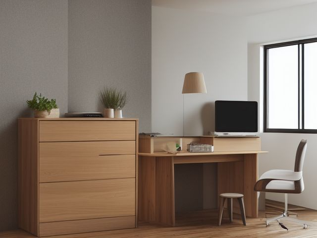

Home Office micro zone
The Desk Drawers and Pedestal
Hold the small tools you reach for without looking, and the live files you touch weekly.
One session: 30-45 min. quick once you commit, though the cable and charger sorting eats more of it than you expect

What done looks like
A top drawer with a divided tray holding pens that all write, one stapler, one pair of scissors point-down in its own slot, and a deep pedestal drawer of hanging files with tabs all standing in one line.
The six passes, in order
Work them in this order. Sorting after you have arranged things means arranging things you were about to remove.
Sort
Decide what stays. Everything else leaves the zone now.
Tip the top drawer onto the cleared desk and test every pen on scrap paper. Dried highlighters, bent paperclips, loose staples, dead batteries, and chargers whose device you cannot point at in this house all go now.
Straighten
Give what stays a home, placed where the hand actually reaches.
Daily hand tools live in the divided tray up top, hanging files fill the deep pedestal drawer, and the two never mix. The stapler does not end up riding on the folders, and no folder gets laid flat across the pens.
Shine
Clean it, and use the cleaning to inspect what you cannot see when it is full.
Vacuum the drawer bottoms, which collect eraser crumbs, loose staples, and paperclip fuzz, then wipe the runners so the drawer closes without a shove.
Safety
Make the zone safe for everybody who uses it, including the shortest person.
Scissors and the letter opener get their own slot with points facing the back of the drawer, because you reach into this drawer blind while looking at the screen.
Standardize
Write down the best way you know today, so it survives you forgetting.
Write what each drawer front holds, in the words this house actually uses, so tape and stamps are found without pulling three drawers.
Sustain
Attach the reset to something that already happens, so it keeps itself.
When you sit down to pay the household bills, put back into the drawers anything that migrated out onto the desk that week.
The cable bag
Somewhere in the pedestal there is a bag or a drawer of cables, adapters, and wall bricks, and it survives because each individual cable is too cheap to think about and too specific to throw away. That decision cannot be made one cable at a time. Empty the whole lot onto the desk at once, pick up each cable, name the device it powers, and point at where that device physically is in this house. No device, no keep. Then keep exactly one spare of each connector type you still use daily, coil and band it, and take the rest to electronics recycling this week. Made in one batch at the cleared desk, it is a single sitting. Made one cable at a time, it never gets made at all.
Check these before you start
- Fall, cut, or crushLoose scissors and a letter opener rolling free in a drawer you reach into without looking, and a pedestal that tips forward if you pull the loaded file drawer fully out while the top drawer is open.
Cleaning it properly
The mess in a desk drawer hides under the divider and in the runner track, not on top. Lift the tray right out, clear the grit that jams the slide, and the drawer will close with a fingertip again.
Inspect as you clean. Cleaning is the only time you see the zone empty, so use it.
- As the drawer slides on its clean runner, flag any grinding or a drawer that no longer closes flush, since that points to a bent runner or a loose fixing.
- Look at the runner metal for rust bloom or a bent lip and flag it rather than forcing the drawer past it.
- Smell the deep file drawer while it is empty: a musty note means damp is reaching the paper, so flag it.
- Check the drawer pulls as you wipe them and flag a screw that has backed out or a handle that has gone loose in your hand.
The standard that keeps it fixed
One purpose per drawer, every pen in it writes, and the scissors live point-down in a fixed slot.
Reset trigger. When you sit down to pay the bills.
Next in this room
- The Primary Desk, the zone before this one
- The File Storage, the zone after this one
- All 6 micro zones in the Home Office
Related reading
- What is 6S?
- This zone's safety pass, in full
- Is one spot in this zone always the one you skip?
- Why this zone gets messy again
- Decluttering vs. organizing
- Before you buy storage for this zone
- Still does not fit, even after the honest count?
- Does something in this zone actually get used somewhere else?
- Stuck on one item in this zone?
- Written the standard, but nobody else follows it?
- Does everyone in the house agree what "done" looks like here?
- Does more than one person use this zone?
- Found a duplicate of something in this zone?
- Why the standard above names one home per category
- Is the everyday item in this zone actually the easy one to reach?
- Not sure whether to keep something in this zone?
- Does this zone keep running out of something?
- Started this zone and stalled partway through?
When you want it off the screen
Carry The Desk Drawers and Pedestal into the room
The method above is complete and free. The Whole House Print Pack puts The Desk Drawers and Pedestal and the other 113 micro zones on 684 printable cards, so the steps you just read are not stuck behind a phone screen while your hands are full.
The Print Pack, 19 dollarsOr draw a card free
If The Desk Drawers and Pedestal keeps fighting back, the real problem usually sits somewhere else in the room. A one hour virtual consult is 250 dollars: we find the function, the friction and the root cause together, and you keep a written standard for the space. See what a consult covers.